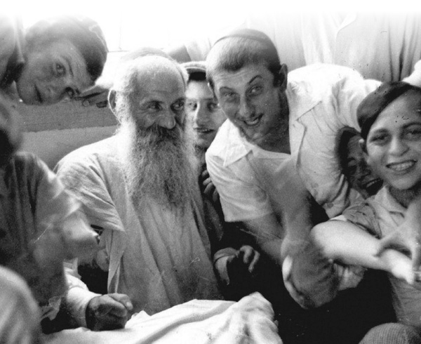

R’ Shlomo Chaim, I’m Yours!
He had a deep understanding of the bachurim and provided them with personal guidance in their Avodas Hashem. * Excerpts from a book compiled by Rabbi Yisroel Elfenbein, soon to be released in Hebrew.
Rabbi Yisroel Elfenbein

HE KNEW THE BACHURIM WELL
“He had a very good understanding about the yetzer ha’ra (evil inclination) of bachurim fifteen years old and up,” said his talmid, R’ Aryeh Leib Kaplan, rosh yeshiva of Tomchei T’mimim in Montreal. “When he farbrenged and spoke about any given topic, his style wasn’t theoretical; he spoke directly to the bachurim. A bachur who sat at his farbrengen heard how R’ Shlomo Chaim was talking about him and to him. When the mashpia spoke about iskafia in eating, he knew exactly what the yeshiva kitchen was serving and got down to the practical details. The same was true with other areas of refining the animal soul; he didn’t speak about upper worlds, but about how a young bachur ought to work on himself.”
R’ Avrohom Alter Heber recalled:
“The mashpia would say: If someone tells you that so-and-so is thinking about something, then that tells you that he himself is thinking about that. For example, when someone who spends a lot of time thinking Inyanei Chassidus sees someone thinking about something, he is sure that the other person is thinking Chassidus. If someone is inclined to think machshavos zaros (foreign thoughts, i.e. unbefitting thoughts), he will assume the other guy is thinking the same thing. So when a bachur complained to him about a friend who was involved in nonsense, the mashpia would say that first the complainer needed to check to see whether his complaint was coming from the fact that he too was immersed in nonsense.”
Although this was a general rule as it applied to the bachurim, the same did not apply to the mashpia himself, who had the ability to discern what was doing by the other person, even if that person was immersed in things to which he himself had no connection. R’ Boruch Lesches relates:
“In my time, they said that once there was a bachur in yeshiva who was considered one of the ovdim. He davened slowly and with avoda. One day, when the minyan was up to Yishtabach, the mashpia went over to him, took off the t’fillin from his head and said to him, ‘Feh, feh, machshavos zaros like that in the middle of davening!’ The bachur later admitted this was true.”
R’ Shlomo Chaim was very practical, and when necessary displayed worldly knowledge. When it came to shidduchim, he made many inquiries about the family and asked questions that showed his deep understanding of how to run a family and establish a Jewish home.
As a practical person, he was quite familiar with the yetzer ha’ra of bachurim, and knew how to help them out of the muck, to get rid of machshavos zaros and get involved in spiritual matters, mainly through guidance in avodas ha’t’filla. He knew what each bachur was immersed in specifically, and spoke to each one about things appropriate to him. When he guided talmidim in avodas ha’t’filla, he did so based on their level. At farbrengens, he spoke about avodas ha’t’filla in a general way and emphasized the need to concentrate on the meaning of the words, which is mandatory for everyone. But in personal conversations, he spoke with each bachur about the level he was on. The same was true for other aspects of the bachurim’s spiritual lives. He spoke to each one on his level on every subject, from the most refined and lofty in the ways of Chassidus all the way to dealing with lowly desires.
Apparently the experience he accumulated over many years as a mashpia taught him how to identify what was going on with every bachur. One of his talmidim related:
“One year, at the end of the summer, I went on vacation to a place that had been opened specifically for yeshiva students. We went there to spend some time at the beach. When I returned, R’ Shlomo Chaim said to me, ‘Look at you! It does not seem to me that your spiritual state is good; you had a big spiritual drop lately.’ I was shocked by this and felt he was reading what was going on inside me like an X-ray machine.”
THERE IS SOMEONE TO TURN TO
The mashpia understood the bachurim and the bachurim knew that the mashpia understood them. They knew that they had whom to turn to with spiritual questions. He was fifty years older than they were, but that did not prevent them from feeling that he, more than anyone else, understood them.
“When we learned by R’ Shlomo Chaim,” reminisced one of his talmidim, “even if a bachur thought about leaving the yeshiva and enlisting in the army, he would go and discuss it with R’ Shlomo Chaim.”
R’ Shlomo Chaim was the main spiritual figure of the yeshiva and the bachurim spoke to him about anything on their minds. The mashpia would also take the initiative to invite bachurim to his house and he would give them guidance and advice in their personal lives.
R’ Aryeh Leib Kaplan:
“I would not be exaggerating if I said that the mashpia was busy every Thursday night with conversations with bachurim who came to pour out their hearts to him.”
They loved going to him to talk about personal matters:
“The mashpia knew how to endear himself to the talmidim,” said R’ Yeshaya Hertzl, “and therefore, the bachurim wanted to talk and consult with him.”
The bachurim saw that the mashpia was a practical person who understood them and was interested in the details of their lives. He wasn’t like a mashgiach trying to extricate secrets out of talmidim, but like a father who is sincerely interested. The bachurim were confident that he would not tell the mashgiach the personal things he told them. They felt completely free to openly discuss with him the problematic issues in their lives.
One of the main topics in those discussions was avodas ha’t’filla. In addition to devoting much of his farbrengens to avodas ha’t’filla, he would emphasize the importance of the subject to whoever entered his room for a personal discussion. Even when he discussed other topics, he would always emphasize that if one learns Chassidus and is involved in avodas ha’t’filla, he is automatically on a higher plane and doesn’t trip up.
He had an ironclad rule which he received from mashpiim in Lubavitch back in the days of the Rebbe Rashab: In order to receive personal direction in Avodas Hashem, the bachur has to want it himself and ask for it from the mashpia. A bachur who does not ask shows that he is still not ready for it and there is no purpose in the mashpia going over to him and offering guidance in Avodas Hashem. He knew how to challenge the bachurim during his farbrengens, and to inspire in them the desire to work on avoda. But after all the inspiration that he gave them in a makif-like way, he expected the bachurim to ask for guidance, which he gave only to those who asked for it.
This is what the mashpia himself said in connection with this, at one of the farbrengens:
“In order for the hashpaa to be accepted, a person has to want to receive it. Someone who thinks he is complete and doesn’t lack anything will get nothing. Therefore, someone who is mara sh’chora (depressive) by nature finds it easier to accept hashpaa, because by nature he is inclined to understand that he is lacking. Someone who is mara levana (buoyant) needs to think and think again until he gets it, and then he can accept hashpaa.”
“R’ SHLOMO CHAIM, I’M YOURS!”
Even the few bachurim who left yeshiva would return to him. They felt his great love for them. There was an incident with a bachur who learned in the vocational school and then switched to the yeshiva in Kfar Chabad. After a while, he went to R’ Shlomo Chaim and said, “I cannot continue learning in yeshiva; my parents are pressuring me to go to the army.” The mashpia tried to dissuade him, but was unsuccessful. The bachur left yeshiva for the army.
At a later point, the bachur returned to Kfar Chabad in uniform and sat an entire night with R’ Shlomo Chaim. The mashpia spoke to him and cried, spoke and cried. He said, “It says in T’hillim: ‘Grievous in the eyes of Hashem is the death of his faithful ones.’ When you are in the army, you are not learning Chassidus, you are not going to the mikva, and you are not learning Chitas. But when a machshava zara falls into your head, when you have the opportunity to gaze on forbidden things and you refrain from doing so, that is precious to Hashem. That is what the verse is referring to, killing your animal soul. Sometimes this is more precious to Hashem than someone who is involved in holy matters.” And R’ Shlomo Chaim burst into tears once again.
Another bachur who dropped out of yeshiva returned one day to R’ Shlomo Chaim. The mashpia showered him with warm words until he melted. The bachur finally burst out crying and said, “I’ve already tried a few times to start anew and come to learn and daven, but it doesn’t work out!”
R’ Shlomo Chaim asked him: Are you willing to follow my guidance for two weeks? That means, during these two weeks you will do whatever I tell you, 24 hours a day, going to sleep when I tell you, getting up when I tell you, davening as long as I tell you and learning what I tell you to learn – are you willing to do this or not?
The bachur jumped up and exclaimed: R’ Shlomo Chaim, I’m yours!
THEY SHOULD BE SEEN AND EMULATED
As was mentioned earlier, the guidance that R’ Shlomo Chaim gave the bachurim came from a loving, caring heart, which is why it was well received.
“R’ Shlomo Chaim was a mashpia who loved all the bachurim,” said one of his talmidim. “He would go into the bachurim’s rooms at two in the morning to see how they slept and to check who was sleeping on his side and who wasn’t. Afterward, he would tell a bachur, ‘I saw you sleeping on your back,’ ‘I saw you sleeping on your stomach.’ If the bachur would say, ‘I was sleeping! What could I do?’ R’ Shlomo Chaim would say, ‘If you fell off your bed and banged yourself, wouldn’t you wake up? How could you continue sleeping on your stomach and not wake up? That means it doesn’t disturb you.’”
R’ Shlomo Chaim understood the bachurim. They would sometimes see him crying over the spiritual state of some bachur. He blamed himself and not the bachur. He would say, “If I did not succeed in explaining things to him and influencing him, that’s my fault!”
Many of his talmidim are grateful to him for changing their very beings, and being mekarev them to concepts of Chassidus in a p’nimius’dike way. Generally speaking, his approach to being mekarev a bachur to the world of avoda p’nimis was through the avoda of t’filla.
R’ Moshe Orenstein, mashpia in the yeshiva g’dola in Tzfas, said:
“R’ Shlomo Chaim felt a special love for those bachurim who came of Chassidic stock. A talmid whose grandfather learned in Tomchei T’mimim in Lubavitch was someone he considered a meyuchas (pedigreed). At the same time, if he knew that this bachur wasn’t able to receive guidance in avodas ha’t’filla, he did not attempt to talk to him about this. On the other hand, if R’ Shlomo Chaim saw a bachur who was capable of accomplishing a great deal in avodas ha’t’filla, even if his background wasn’t Chassidish, and he wasn’t attracted to inyanei avoda, he would talk to him and be mekarev him to avodas ha’t’filla.”
In the early fifties, when the number of talmidim in the yeshiva fluctuated between sixty and seventy, R’ Shlomo Chaim once said, “I would like for there to be at least five big ovdim in yeshiva like … and another twenty regular ovdim like …” In other words, about a third of the talmidim of the yeshiva.
“He accentuated the positive,” said his talmid, R’ Micha Steinmetz. “He explained to all of us that we need to be involved in avodas ha’t’filla, and there was no place for the thought that maybe it didn’t pertain to each one of us, and certainly there was no reason to be ashamed of doing it.”
One of the ways he encouraged the bachurim to be involved in avodas ha’t’filla was through the general instruction that bachurim who spent a long time on their davening should remain and daven in the zal, so others would see them and do the same. Only in unusual situations, when a bachur spent such a long time davening that it went deep into the Nigleh learning, would the mashpia tell him to daven in one of the classrooms or in his room in the dormitory.
But if a bachur spent a long time davening so that it continued fifteen or even thirty minutes into the Nigleh learning time, the mashpia preferred that he remain in the zal and daven. In connection with this, he would quote what the Rebbe Rayatz said at the Simchas Torah farbrengen of 5688 (the last farbrengen before he left Russia) to R’ Zalman Kurenitzer, the mashgiach for Nigleh in Tomchei T’mimim in Nevel, and to R’ Nissan Nemanov, the mashgiach for Chassidus: “There doesn’t need to be peace between the mashgiach for Nigleh and the mashgiach for Chassidus. There is more than enough shalom between you.”
In other words, the ideal situation in Tomchei T’mimim is when bachurim want to daven at length so that their davening extends into Nigleh. This sometimes results in an argument between the mashgiach for Nigleh and the mashgiach for Chassidus as to whether they should allow this or not. R’ Shlomo Chaim would relate in the name of R’ Berel Horodoker that R’ Zalman (the mashgiach for Nigleh) once quoted to R’ Nissan (the mashgiach for Chassidus) the pasuk, “nirpim atem nirpim, al kein atem omrim neilcha nizbecha la’Hashem” – there are bachurim who are lazy about learning Gemara and so they say they want to daven! R’ Nissan replied: That was Pharaoh’s argument!
R’ Shlomo Chaim once farbrenged until late at night and the mashgiach for Nigleh came to complain to him that this interfered with the learning the next day. R’ Shlomo Chaim answered sharply: The plan “to destroy and kill and annihilate all the Jews” could have been carried out by a goy, but the plan to destroy and annihilate Chassidus had to be led by a Jew. Today, when there is a war on the foundations of Chassidus, i.e. a Chassidishe farbrengen, the war needs to be waged not just by any Jew but by a Chassid!
A TIME TO UPLIFT AND A TIME TO CRUSH
R’ Shlomo Chaim did not just provide guidance for davening at length. As the bachurim davened Shacharis in the yeshiva minyan, he would be there and watch everyone. After the davening, he would call over some bachurim and make various comments concerning their davening. He gave special attention to those bachurim who wanted his guidance and went over to them often. In addition to the personal guidance he gave them in avodas ha’t’filla, step by step, he would follow-up by observing their progress to see how they were implementing his suggestions.
Bachurim sometimes complained to him that they felt that avodas ha’t’filla wasn’t for them and that it was like an attempt to climb up to the heavens. He would continue working with them on how to daven and what to meditate on, each according to his situation.
R’ Moshe Orenstein points out that R’ Shlomo Chaim knew when to draw someone close and when to distance them, when to caress and uplift a bachur and when to put him in his place:
“When a bachur saw how someone of R’ Shlomo Chaim’s stature spent half an hour explaining to him how to meditate on the content of a chapter in Tanya and what practical conclusion for his spiritual avoda he could derive from that chapter, he would be devoted to the mashpia (as it says in Tanya 46 about a great person who displays his love for someone lower than himself). But the mashpia did not allow a bachur to delude himself. To start with, he had him think Chassidus for five minutes and said: In another two weeks we’ll see what progress you’ve made and then we’ll decide what’s next.
R’ Shlomo Chaim was extremely observant. If he saw that a bachur had made progress after two weeks, he permitted him to add another five minutes of meditation, and so on. Sometimes, he saw that a bachur needed to be put in his place, and when the bachur asked for guidance in what to add to his avoda, he would yell, “Enough! Are you already properly involved in what I gave you to meditate upon that you need to add to it?”
R’ Orenstein related:
“At one of the farbrengens, R’ Shlomo Chaim spoke about bachurim who are suited to avoda and those who are not. He did not mean to say that that the latter are exempt from avodas ha’t’filla, for he always maintained that everyone can daven with avoda. He meant avoda in the pure sense, including hisbonenus pratis (specific, detailed contemplation) as explained in the kuntreisim (the tracts on t’filla and avoda authored by the Rebbe Rashab).
“Then the mashpia said to one of the bachurim who was considered a ‘magnificent vessel’ and laced into him, ‘You are not at all fit for avoda!’ The bachur was completely shattered by this. After all the hopes this bachur had, to suddenly be crushed like that by the mashpia! What did this bachur do? He sat and wrote a letter to the Rebbe. He wrote that the mashpia told him such-and-such at a farbrengen and went on to explain how he felt about this.
“After a while, the bachur received a response from the Rebbe which said: Every person is suited for avodas ha’t’filla, but there are differences in quantity and quality. As for you, ask your mashpia (i.e. the mashpia of the yeshiva).
“The Rebbe was informing the bachur that R’ Shlomo Chaim was the man with the authority to guide bachurim in matters of avoda, and if there was any question, he had to clarify it with him.”
TO FIGHT TILL THE LAST DROP
According to R’ Y. Y. Offen, R’ Shlomo Chaim demanded that bachurim as young as fifteen begin davening at length.
“He maintained that the younger the bachur, the more refined a vessel he was and the more successful he would be in the avodas ha’t’filla. A younger bachur ate fewer bowls of soup in his life, he thought fewer machshavos zaros, and therefore, he can be more successful in his avodas ha’t’filla than an older bachur who has become more coarse. He did not demand that young bachurim attain high levels, of course. He merely tried to get them into the atmosphere of avodas ha’t’filla, starting with davening with kavana with the meaning of the words.”
R’ Shlomo Chaim would explain: While a person is still young, before he reaches the age to learn in Tomchei T’mimim, he is still not ready for inyanei avoda. After he marries, when he has responsibilities, and it is already too late to start with avoda. So the number of years he spends in yeshiva (i.e. the post high school years) is the most opportune time for avoda.
R’ Shlomo Chaim’s goal was for a bachur to consistently be involved in avodas ha’t’filla with the knowledge that “the matter is very close to you.” Since he knew how to guide bachurim so that they would find avodas ha’t’filla geshmak (enjoyable), the bachurim were drawn to it.
R’ Shlomo Chaim said, “There are some who complain that they are not successful in their davening. Does it make sense for a bachur to stop completely and submit to his animal soul? The animal soul is his enemy! When you are at war, you cannot surrender. You have to fight till the last drop of blood!
“When a soldier surrenders to the enemy, that is called being a traitor. If he is caught, he is killed. When a soldier capitulates to the enemy, it’s because he doesn’t care who wins, his country or the enemy country. That is in a situation when there is no personal enemy; there are two warring countries. But during davening, a person is fighting his personal enemy, so how can he surrender to him? If you feel that your animal soul does not allow you to daven, you need to make the effort to daven with all your strength, davka because he doesn’t let you!”
Beis Moshiach (staff). "R’ Shlomo Chaim, I’m Yours!." Beis Moshiach, no. 878 (May 1, 2013).